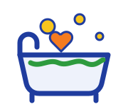
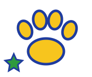

01
Toilettage complet
Un toilettage adapté à votre chien et au travail demandé. Lors de la prise de rendez-vous, Alexandre échange avec vous sur la race, le pelage et les besoins de votre compagnon.
Les soins proposés
Alexandre Koch propose quatre prestations principales dans sa camionnette spécialement aménagée, qui se déplace devant votre domicile.
Prendre soin de son compagnon
Lors de l'appel, vous pouvez expliquer la race de votre chien, son pelage et le travail souhaité.
Un toilettage adapté à votre chien et au travail demandé. Lors de la prise de rendez-vous, Alexandre échange avec vous sur la race, le pelage et les besoins de votre compagnon.

Le bain et le séchage font partie des prestations principales de Clean Dog Mobile. Ils sont réalisés dans la camionnette aménagée.

La coupe des ongles est proposée comme soin spécifique. Vous pouvez en parler à Alexandre lors de votre appel pour préciser le travail souhaité.

Le nettoyage des oreilles fait également partie des prestations proposées par Clean Dog Mobile.
Des tarifs adaptés
Le tarif est établi selon la race, la taille, le type de poil, l'état du pelage et le travail demandé. Dans la grande majorité des cas, le prix annoncé est celui qui sera appliqué. Si un pelage très noué demande exceptionnellement beaucoup plus de travail, un supplément peut être envisagé après en avoir informé le client.
Réservation par téléphone
Contactez directement Alexandre Koch.